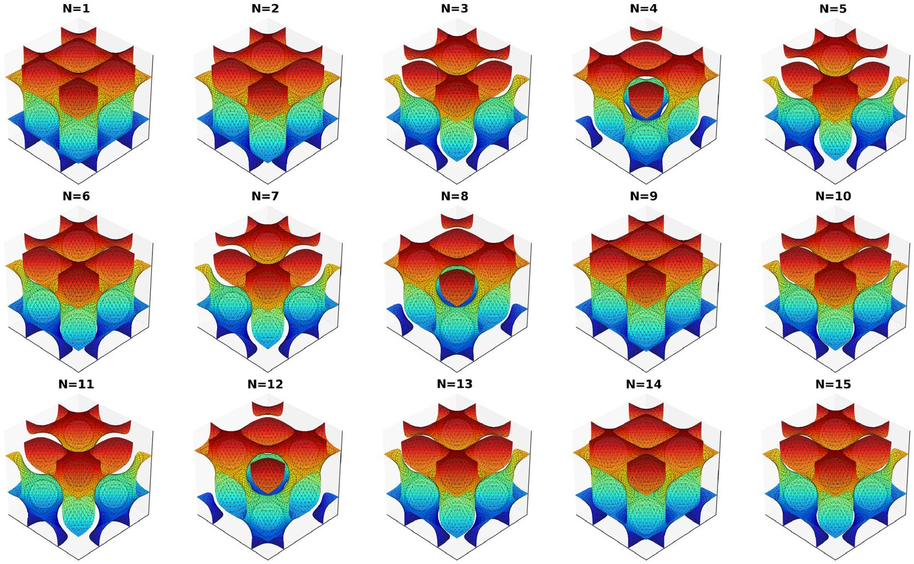

01
Inverse design of architected materials
Given target effective properties, which cellular geometries achieve them? The answer is rarely unique, and that is useful: diversity lets a manufacturing constraint eliminate one candidate without collapsing the design space. Style-IH-GAN generates diverse triply periodic minimal surface unit cells for prescribed properties and emits spatially graded fields in one pass, with fidelity checked by numerical homogenization over 750 samples. CH-WGAN extends this to uncertainty-aware generation of three-dimensional aperiodic structures through signed distance fields.
Engineering with Computers 42:148 (2026, open access) · Journal of Mechanical Design 148(12):121701 (2026)
